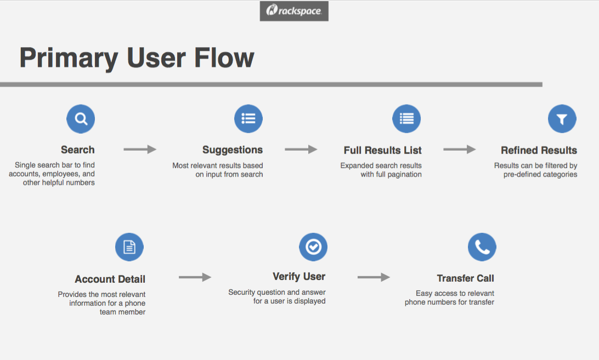
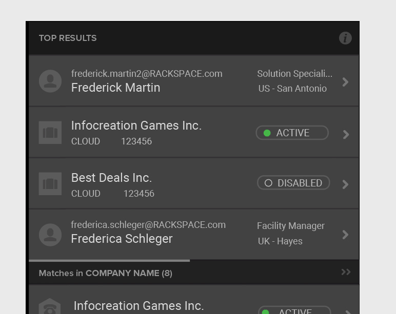
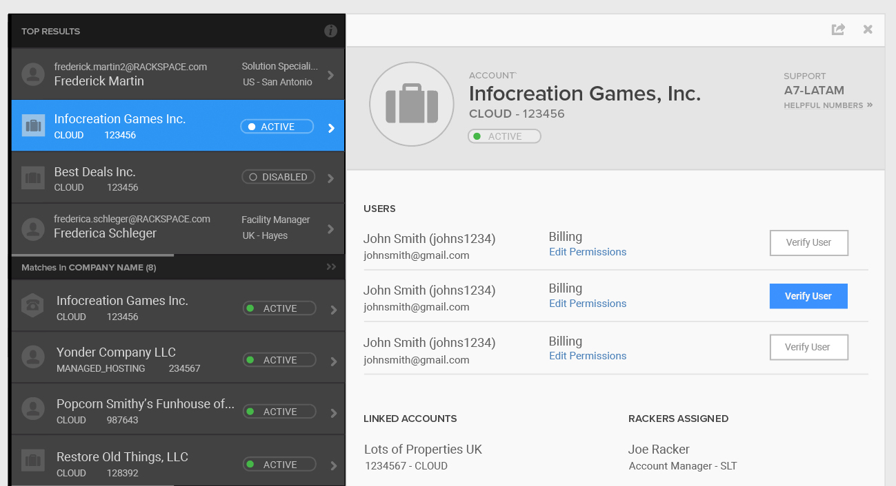
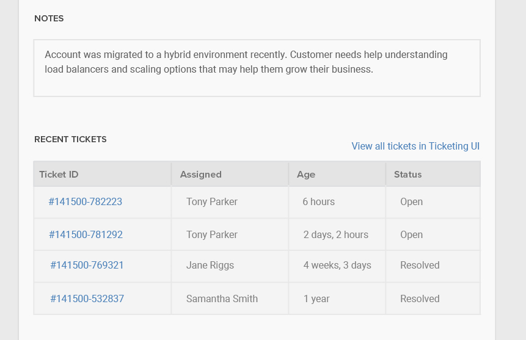
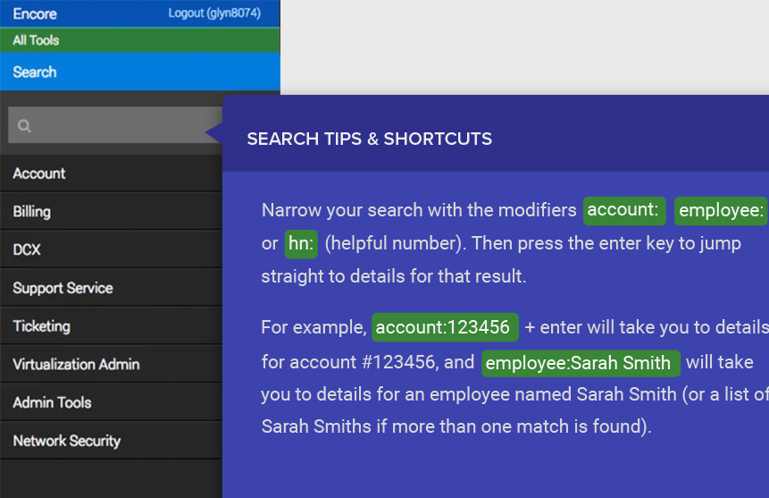
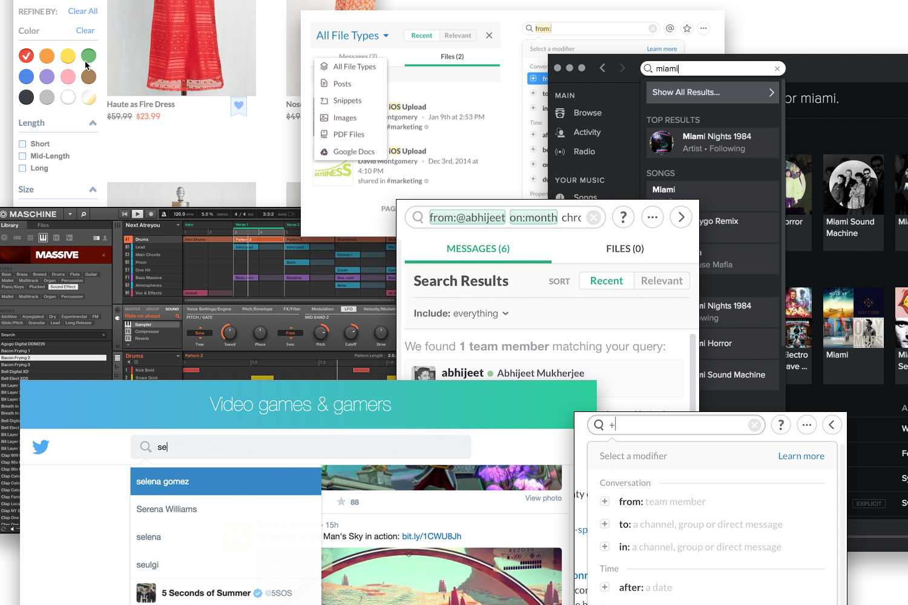
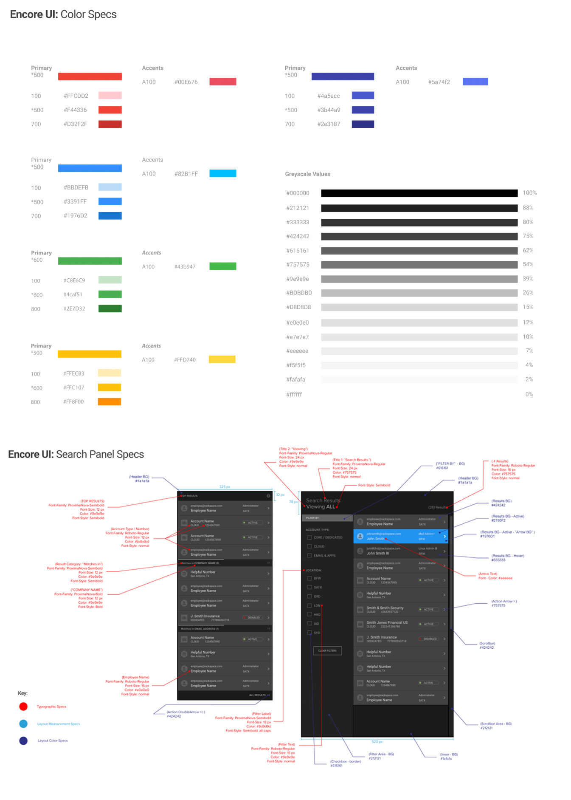

Rackspace, the largest managed cloud provider, counts fanatical support as its leading differentiator. Customers can call in 24/7/365 and expect to reach someone—no pressing zero for an agent, no decision trees. The Phone Team’s methodology for routing customer calls required weeks of training, antiquated manual systems, and a lot of tribal knowledge.
With different portals for different account types, the Phone Team searched several legacy systems to locate a customer’s account information just to identify which specialist to connect with the customer.
The Phone Team’s original request: to improve integration of Rackspace’s phone system with multiple customer relationship management systems. “Oh,” they said, “we also need improved search capabilities so that we assist customers more quickly.”
It’s often the “Oh, and…” requests from clients that expose the real problems that need to be addressed. It takes careful listening to hear beyond the client’s proposed solutions and uncover the real problem at hand.
It’s often the “Oh, and…” requests from clients that expose the real problems that need to be addressed.
The challenge:
Following an expansive research effort to illuminate pain points and areas of inefficiency on Rackspace’s support floor, The Encore Search project brought several high-performing teams together. Few team members had engaged in cross-disciplinary work to the extent that the Encore Search project demanded or worked on a team so big.
At such a large company, designers and developers had grown accustomed to working in silos to make incremental improvements to legacy applications. Few were prepared to collaborate with coworkers who didn’t share their expertise and were unaccustomed to the level of interdisciplinary collaboration the project demanded. As someone with both a design and development background, I worked to “grease the wheels” between software developers and designers.
As someone with both a design and development background, I worked to “grease the wheels” between software developers and designers.
I participated in the design process, wrote CSS, sped up design revisions, and improved handoff between design and development.
In the months leading up to the project, I participated in multiple research sessions led by Rackspace’s UX Research Team. Using the framework and rubric they defined, I conducted extensive interviews with Rackers across the Support Floor. I presented findings to the development team to provide them valuable context they needed for collaboration during the sprint.
I uncovered assumptions during the initial sprint and worked with the customer and the UI, API, and design teams to gather requirements. I communicated across teams to understand the underlying systems, vet technical feasibility, and create a shared understanding of the problems we needed to solve to deliver a useful tool to the customer in the time available.
I uncovered assumptions during the initial sprint and worked with the customer and the UI, API, and design teams to gather requirements. I communicated across teams to understand the underlying systems, vet technical feasibility, and create a shared understanding of the problems we needed to solve to deliver a useful tool to the customer in the time available.
I wrote LESS and HTML to implement designs created by the visual design team, and collaborated to adjust font sizes, color, animations, etc. in the browser to match their intent. I reviewed front-end code written by other software developers to ensure consistency. In cases where visual designers had overlooked interactive states (loading, error, hover, etc.), I defined what was needed and served as facilitator between the development and design teams.
I facilitated discussion and led collaboration between product management and the UI, API, and design teams during the initial sprint and throughout the life cycle of the project. I presented work to gain buy-in from stakeholders and senior executives at the highest levels of the company.
Despite leveraging legacy systems, we’d be starting from scratch to imagine a new tool. Our customer, the Phone Team, had never used software custom-built for their workflow, and instead were forced to use existing ineffecient tools and manual workflows to accomplish tasks.
Particularly stunning was Research’s finding that the Phone Team relied on monthly email distribution of a 20-slide deck detailing names and phone numbers of key people and departments within the company where they may need to route customer calls. Often the slide deck was printed so Rackers could shuffle through the pages at their desks while on a call. All this to connect a call after they had searched up to four legacy systems to locate the customer’s account.
We had a hard deadline that required us to deliver something to the customer before the end of the year, giving us roughly four months from kick-off to release, with a few weeks at the tail end for user acceptance testing and bug squashing before closing out business for the year.
Armed with research findings and the Phone Team’s request to focus on improving search, the team assembled to kick off the project with a five-day sprint. We arrived on Monday morning and the project began with no design, no interface, no back end, no UI, no API, very few requirements, and only a high-level request from the customer.
Following the framework outlined in Jake Knapp’s book Sprint: Solve Big Problems and Test New Ideas in Just Five Days, we mapped the problem, sketched detailed solutions, vetted technical feasibility, created prototypes, and demonstrated our work to senior leadership in just five days.
We mapped the problem, sketched detailed solutions, vetted technical feasibility, created prototypes, and demonstrated our work to senior leadership in just five days.
With all hands on deck for the sprint, we found ourselves all in one room surrounded by whiteboards, ready to work but not quite sure where to begin. Product management, API developers, UI developers, interns, designers—we had all assembled to solve the Phone Team’s search problem, but initially struggled in fits and starts to focus with so many disciplines present. As the only team member with both design and development expertise, I led the effort to uncover requirements for the project and kickstarted collaboration.
After introductions and some false starts, I walked to the white board with a marker in hand and drew a high-level user journey to illustrate the steps the Phone Team might take in their work flow if we provided them with a search-centric application. The flow, with revisions and contributions from the team, became a touchstone we returned to throughout the project.
Throughout the one-week sprint, we found a natural cadence of splitting to work as independent disciplines (design, UI, API dev, etc.) and coming back together to make sure we were still in sync. In this way, we quickly made major decisions about the structure of the API, the look and feel of the interface, and the search algorithm while maintaining unity of vision and shared momentum. Tight feedback loops and collaboration across disciplines made Encore Search a strong tool from the very beginning.
Tight feedback loops and collaboration across disciplines made Encore Search a strong tool from the very beginning.
Throughout the sprint, the leader and key members of the Phone Team would join us for half an hour to answer questions about their workflow, validate sketches and design ideas, and verify assumptions the team made about their needs. We also referred back to the study completed earlier in the year and the findings associated with the Phone Team.
The vision for Encore Search: to help the Phone Team find accounts, verify customers, and transfer calls to the right specialist who could help them with whatever they were calling about.
We didn’t want to provide yet another tool in the arsenal of portals, legacy systems, and shadow IT the Phone Team needed to access with every customer call. Rather, we wanted to provide a single tool that simplified their workflow, anticipated their needs, and made it easy and fast to help customers.
We wanted to provide a single tool that simplified their workflow, anticipated their needs, and made it easy and fast to help customers.
Encore Search serves as an elastic search portal for cloud, managed, and hybrid customer accounts, which previously were not searchable within the same interface. With search suggestions and a multi-paneled interface, users can easily find customer information even with scanty search terms and confirm they’ve located the correct account. With a unified, global search and a snappy API and interface, the Phone Team can help connect customers to account specialists more quickly than ever before.
Search suggestions display as the user types in the search box, helping them find the correct customer account quickly, regardless of type.
The progressive disclosure of the paneled interface makes it easy for the Phone Team to locate related accounts and confirm they’ve found the correct result.
An overview of just the right amount of information provides enough context to the Phone Team. If more detail is needed, it’s easy to jump to other portals and legacy tools to find a specific support ticket or invoice.
The Phone Team uses Encore Search all day every day to do their jobs. They’re tech savvy experts who love shortcuts and expect a high degree of control. Encore Search is easy and intuitive to use, but provides shortcuts and jumps in workflows for expert users.
Once we secured buy-in from senior leadership following our kick-off sprint, I worked closely with product management and the engineering teams to continue collaboration and transparent communication. The API, UI, and design teams shared agile sprint cycles with the same product manager. We followed agile methodology with short, iterative release cycles, two-week sprints, and regular demos to management and the larger team.
We began prototyping in the browser as soon as possible, first with dummy API responses until the real thing was available. Tight feedback loops between development and design made pivots due to technical hurdles or scope adjustment quick and easy.
As the sole member of the team with a strong understanding of both the development and design disciplines, I translated requests and responses between teams. I often interpreted design intent to developers struggling to implement interactive features designers hadn’t anticipated, or translated technical limitations to designers so they could adjust their mock-ups.
I often interpreted design intent to developers struggling to implement interactive features designers hadn’t anticipated, or translated technical limitations to designers so they could adjust their mock-ups.
My involvement aligned development, product, design, and customer on an aggressive timeline.
Few examples of search across such a large, specific data set existed. Though commercial sites and search engines offered some ideas, most search interactions accommodate users who are browsing and refining rather than trying to locate a single, specific result among a mountain of data. Designing Encore Search brought the differences in commerical and retail design vs. enterprise design of internal tools into stark relief.
Most search interactions accommodated users who were browsing and refining rather than trying to locate a single, specific result among a mountain of data.
I knew we needed a powerful yet intuitive search tool. I turned to other data-rich search experiences: email clients, chat applications, advanced search for libraries and search engines, and filtering and refinement sidebars for large retail sites. These search applications served as inspiration for the Encore Search interaction and flow, coupled with progressive disclosure and Rackspace-specific creative adjustments.
During the kick-off sprint, I led discussion to nail down the details of what information the Phone Team needed to access in order to transfer customers to the right people. After speaking with members of the Phone Team to verify our assumptions and understand their needs, I led designers and developers to work together—what information could the API provide, where should the information be displayed, and were certain ideas designers had for interaction possible to build on our aggressive timeline?
By collaborating closely with the API and UI teams, we were able to vet sketches early and understand the limitations of what was achievable on the project’s aggressive timeline. White board sketches laid the foundation for what the team presented to senior leadership at the end of the week.
By collaborating closely with the API and UI teams, we were able to vet sketches early and understand the limitations of what was achievable on the project’s aggressive timeline.
Using low-fidelity wireframes and animations in Keynote, we showcased our vision for the experience and interaction of Encore Search to senior leadership at the end of that first sprint week. Though there were certainly changes and refinements, it was easy to see, even at that early stage, the skeleton of the final experience we delivered to the Phone Team four months later.
After the kick-off sprint and buy-in from leadership, the team got to work. With knowledge of what the UI team needed returned from the API, the API team worked to leverage legacy systems and existing API teams to return the data needed more quickly than existing tools. With the vision provided by rough wireframes produced during the sprint, the UI team began developing the paneled interface and animations required that had no precedent in the existing ecosystem of internal tools. The design team got to work refining the wireframes with user feedback and began to apply color and font choices to create high-fidelity mock-ups and specs for the UI team.
Though teams worked concurrently and independently, we shared scrum meetings and held regular demos of progress to keep communication clear. During this phase of the project, I vetted visual designs and offered critiques. I helped visual designers understand what specifications needed to be communicated to developers, and which ideas for interaction might increase level of effort or affect project scope.
The panel interaction, while a creative solution for progressive disclosure and way-finding through search results, presented challenges from a user experience perspective. We had found a solution that helped the Phone Team zero in on the correct search result, but panels had certain ramifications as an interface choice. For instance, if a user found a result and opened several subsequent panels to see more detail, what should happen when they close the initial result panel? Would they expect the subsequent panels to remain open?
The design team spent time testing this interaction thoroughly with users to gauge their expectations. I facilitated conversations with the UI team to understand what options were fastest to implement that would still match user expectations. Through negotiation, early prototypes in the browser, and productive compromise, we arrived at a solution.
Encore Search shipped on time. The Phone Team was delighted with the experience, which gave them a single tool to replace multiple legacy systems. The user flow of locating customer data to route a call was reduced from four tools and 16 screens to one tool and one screen. Call time was decreased by 75%, saving the company $220k per year and saving customers 3,507 hours. With the time saved, the Phone Team was able to accept more calls than ever before.
Following launch, word spread quickly about a fast new search tool, and within weeks Rackers across the support floor—not just the Phone Team—began using Encore Search as part of their daily work flow. Its successful release kicked off plans to retire legacy systems and phase out clunky, expensive interfaces.
The highest levels of senior leadership recognized Encore Search as a tremendous success. The designers and developers on the project received a Rackem Award for Service Delivery Innovation from the senior leadership team for work on a critical and high-impact project.
Josh Schairbaum, a Director of Software Development in Racker Tools who worked with the team, wrote, “We’ve taken a significant problem leading to poor customer experience inside Rackspace and used our particular set of skills to provide a solution that is performant, maintainable, and extensible. It’s going to be the foundation for many of the things we do in the coming months and will be a day-to-day fixture for almost every Racker.”
[The new tool] is going to be the foundation for many of the things we do in the coming months and will be a day-to-day fixture for almost every Racker.
To share our success and highlight the processes and ways of working, I gave a talk at RAX.io, Rackspace’s internal conference. Though the majority of attendees and talks have a development focus, our talk “The Secret Sauce: Bridging the Gap Between Development and Design,” focused on design processes and cross-team collaboration. With Eric Weidner, Encore Search’s visual designer, I shared how we worked from the outside in, what processes we used, and how others could use the same approach on their teams.
As Schairbaum hinted following release, Encore Search went on to become a powerful tool used daily on the support floor, and inspired subsequent projects to tailor the experience for users beyond the Phone Team. The Encore Search interface became the foundation for several other tools, including Dispatch, a tool for logging interactions with customers outside of support tickets, and Origin, an extendable application frame and platform to unite legacy tools in a single interface until they could be redesigned or retired.